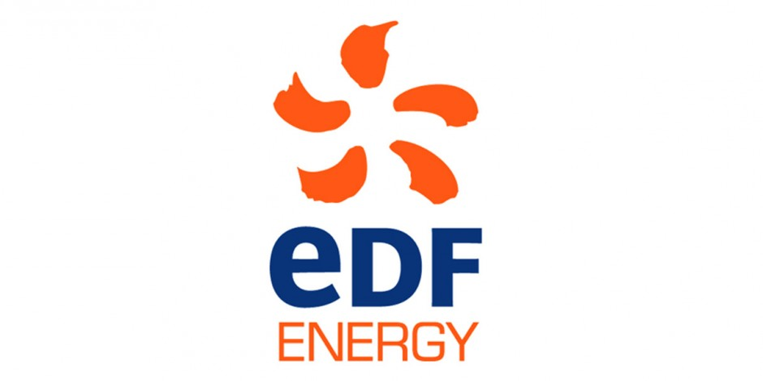
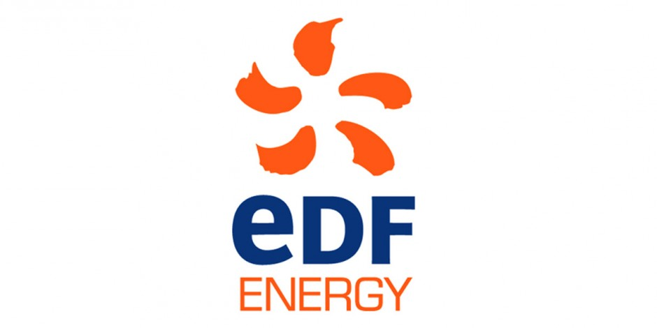

Stagiaire Fibre Optique Chez ORANGE 
Stagiaire Edf 
| fatou fall | Celibataire |
| Epinay | Epinay sur Seine |
| 00 33 75 58 41 19 | |
| fatoumah725@gmail.com |
Formations
| 2017-2019 | Master1-2 Ingénierie et Innonvation en Réseaux et Images |
| 2015-2016 | Licence3 Sciences pour l'Ingénieur |
| 2013-2015 | BTS Télécommunication et Informatique |
| 2012-2013 | Baccalauréat Sciences Expérimentales |
Compétences
| Développement | Java,Html4 |
| Base de Données | Maven,PostgreSQL |
| Réseaux | Voip,CN, WIFI |
| Langues | Anglais, Allemand |
Expérience
| 2017 |
Stagiaire Fibre Optique Chez ORANGE
|
| 2016 |
Stagiaire Edf 
|
Centre Intéret
| Sport | Music,cuisines, et lecture |
| Culture | Cinema |
| Voyages | Italy ,Espagne |